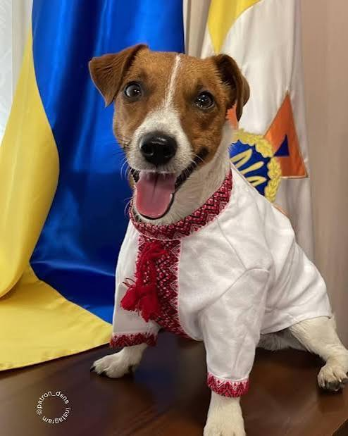

Пес Патрон (нар. 20 липня 2019, Чернігів) — український собака-винюхувач вибухівки, талісман Державної служби з надзвичайних ситуацій, який здобув велику популярність за часів повномасштабної російсько-української війни. Офіційний символ Міжнародного координаційного центру з питань гуманітарного розмінування[5], сформованого при Міністерстві внутрішніх справ. За даними ДСНС, до 19 березня 2022 року Патрон допоміг виявити понад 90 вибухових пристроїв, встановлених російськими військами.
Пес Патрон є офіційним талісманом Державної служби України з надзвичайних ситуацій та чотирилапим сапером, який допомагає розміновувати території, веде просвітницьку роботу серед дітей та займається благодійністю.